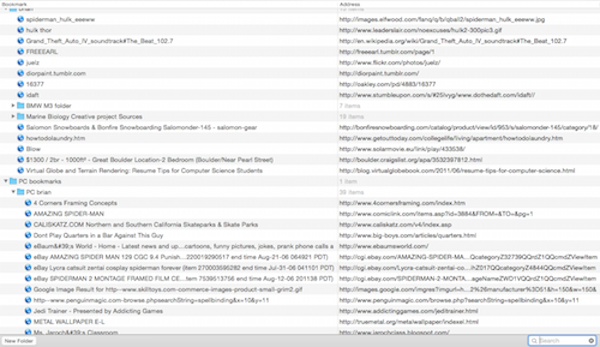
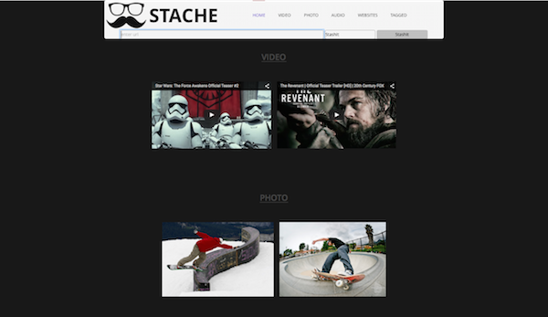

Overview: Create anything using Methods and Tools learned. Use methodologies, VCS, IDE/Editors, databases, peer code review, and project tracking software.
Problem: You save links in your web browser and all the links look the same. With Stache you get a special thumbnail and a beautiful organization of media. Our interface will parse the video links, photo links, and any other link into the appropriate category.
Typical Safari bookmarks: 
Stache's beatiful bookmarking: 
Solution: My idea was to create a webpage for a user to post their favorite media (photos, videos, music, and websites). Stache is a better way to bookmark everything you find on the Internet.
Implementation: Thanks to a great team we created Stache.link. We used Agile Management Software Development – this allows flexibility for the developers to react to the unpredictability of the project and focuses on shorter intervals in order to deliver the product accordingly. We used user story sizing to decide the risk, complexity, and effort of each story, which were moved from product backlog board to the active sprint. An important part for our development was the use of pair programming, in order to write better code, increased productivity, quickly catch bugs, and have a focused direction of development. I mainly programmed in the text editor Sublime Text to work with HTML and CSS. MySQL – this is an open source relational database management system that uses SQL to manipulate the contents within the database. Everything was pushed to a Github repository. Github served great for a version control system.
Overview: Grandparents have a vacation home that is in the desert 120 miles away. The home has automation through the internet which includes video camera, IP phone, thermostat control and garage door monitoring. Having the ability to turn on the Air Conditioner before arrival helps cool down the house which is critical for a home in the desert during the summer months.
Problem: The internet occasionally will go down which requires a reboot of the equipement. This is a manual process that requires unplugging the modem, IP phone and router and then plugging them back in one at a time in a specific order, waiting for each to boot before plugging in the next. Since the home is 2 hours away, this is not feasible without physically being at the location and would require a 4 hour round trip to accomplish.
Solution: Provide a monitoring system that will continually check to see if the internet is connected and have the ability to automatically reboot the hardware if the internet is down.
Implementation: Design is to use a Raspberry PI computer board driving a relay board to accomplish this. The Raspberry PI runs a shell script every ten minutes (through a Cron job) that pings a couple of web sites (yahoo and google) to determine if the internet is active. If both pings fail, a C program gets launched that turns off all the devices attached to the relay board. Then they get turned on one by one to reboot. At the end of the reboot process, once the internet is restored, an automated email is sent to indicate that a reboot occurred.
The code can be found on this repository.
Overview: For a final project in the class Intro to Programming (CSCI 1300) write 150 or more lines of code for a game.
Solution: Based on users input to the questions asked make the game play accordingly.
Implementation: Requirments consisted of a certain number of classes, functions, and conditional statements. Created in Fall of 2013.
The code can be found on this repository.